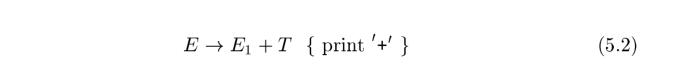

Chapter 5 Syntax-Directed Translation#
This chapter develops the theme of Section 2.3: the translation of languages guided by context-free grammars. The translation techniques in this chapter will be applied in Chapter 6 to type checking and intermediate-code generation. The techniques are also useful for implementing little languages for specialized tasks; this chapter includes an example from typesetting.
We associate information with a language construct by attaching attributes to the grammar symbol(s) representing the construct, as discussed in Section 2.3.2. A syntax-directed definition specifies the values of attributes by associating semantic rules with the grammar productions. For example, an infix-to-postfix translator might have a production and rule

From Section 2.3.5, a syntax-directed translation scheme embeds program fragments called semantic actions within production bodies, as in

By convention, semantic actions are enclosed within curly braces.
Between the two notations, syntax-directed definitions can be more readable, and hence more useful for specifications. However, translation schemes can be more efficient, and hence more useful for implementations.
| syntax-directed definition | SDD | semantic rule |
| syntax-directed translation scheme | SDT | semantic action |
The most general approach to syntax-directed translation is to construct a parse tree or a syntax tree, and then to compute the values of attributes at the nodes of the tree by visiting the nodes of the tree. In many cases, translation can be done during parsing, without building an explicit tree. We shall therefore study a class of syntax-directed translations called "L-attributed translations" (L for left-to-right), which encompass virtually all translations that can be performed during parsing. We also study a smaller class, called "S-attributed translations" (S for synthesized), which can be performed easily in connection with a bottom-up parse.
NOTE: 本书对Syntax-directed translation的功能没有进行直接的描述，是非常任意让人糊涂的，wikipedia的Syntax-directed translation非常直接简明的描述了Syntax-directed translation的功能:
Syntax-directed translation refers to a method of compiler implementation where the source language translation is completely driven by the parser.
A common method of syntax-directed translation is translating a string into a sequence of actions by attaching one such action to each rule of a grammar. Thus, parsing a string of the grammar produces a sequence of rule applications. SDT provides a simple way to attach semantics to any such syntax.
上面这段话已经将SDT和semantics关联到一起了，其实SDT是Semantic analysis的一种实现方式，正如wikipedia的compiler中所描述的：
A compiler is likely to perform many or all of the following operations: preprocessing, lexical analysis, parsing, semantic analysis (syntax-directed translation), conversion of input programs to an intermediate representation, code optimization and code generation.